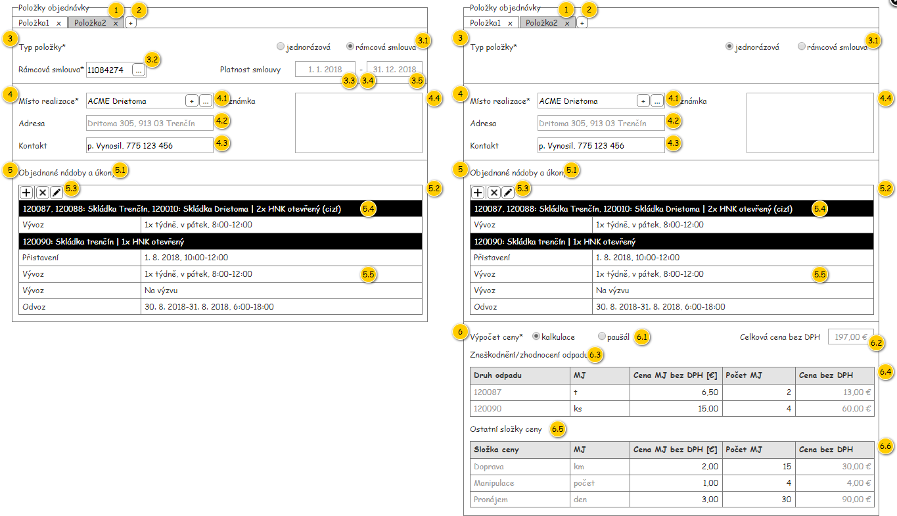
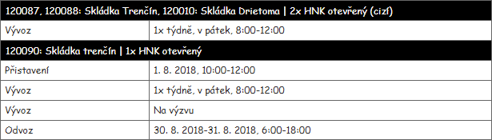
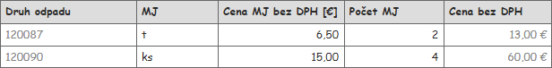
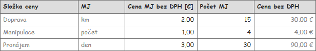
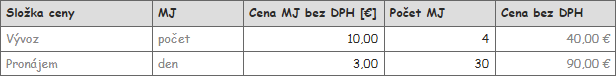
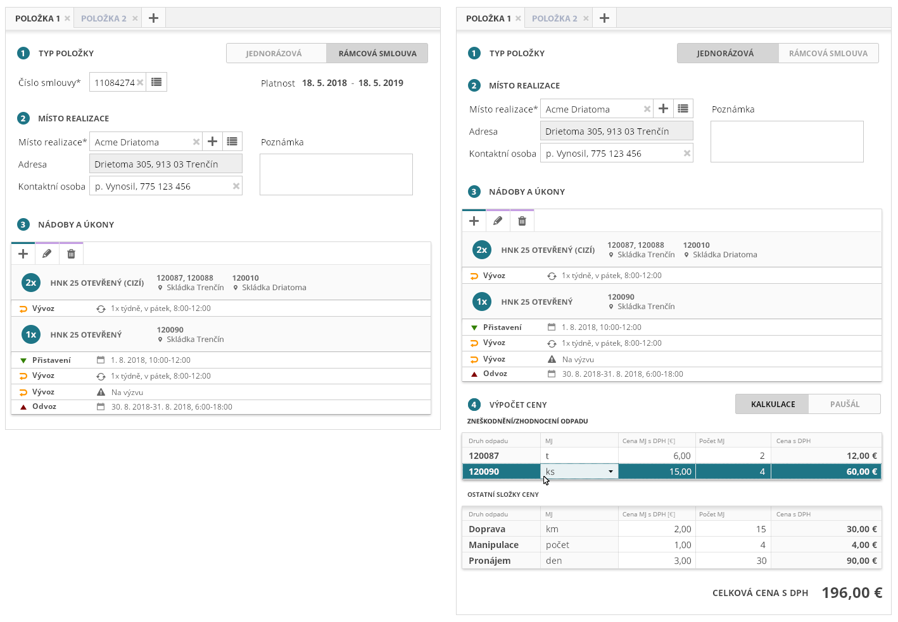

Část formuláře objednávky – Položky objednávky (viz ).

| Callout | Komponenta | Nadpis | Typ komponenty | Příklad hodnoty | Hodnota | Výchozí hodnota | Formát | Zpřístupněná | Viditelná | Chování | Validace | Poznámka |
|---|---|---|---|---|---|---|---|---|---|---|---|---|
| 1 | Položka objednávky | – | TabPage | Položka 1 | Karty generovány dle atributu Položky objednávky entity Objednávka. | – | Položka | – | Vždy | Viz Uložení položek objednávky. | – | Jedna záložka je přidána implicitně. |
| 2 | Přidání položky objendávky | – | Button | – | – | – | – | Vždy | Dle atributu Stav entity Objednávka:
| – | – | |
| 3 | Skupina Typ položky | – | – | – | – | – | – | – | Vždy | – | – | – |
| 3.1 | Typ položky objednávky | Typ položky* | RadioButton | Jednorázová | Atribut Podle smlouvy entity Položka objednávky – atribut Položky objednávky entity Objednávka.
| Rámcová smlouva | – | Dle atributu Stav entity Objednávka:
| Vždy | Viz Změna typu položky objednávky.. | – | – |
| 3.2 | Rámcová smlouva | Rámcová smlouva* | AutoSuggestTextBox | 11084274 | Entita Rámcová smlouva – atribut Rámcová smlouva entity Položka objednávky – atribut Položky objednávky entity Objednávka. | – | <Číslo smlouvy> | Dle atributu Stav entity Objednávka:
| Pokud je Typ položky nastaven na hodnotu Rámcová smlouva. | Viz Změna rámcové smlouvy. | Povinná položka, pokud je Typ položky nastaven na hodnotu Rámcová smlouva. | – |
| 3.3 | Platnost rámcové smlouvy od | Platnost smlouvy | TextBox | 1. 1. 2018 | Entita Rámcová smlouva – atribut Rámcová smlouva entity Položka objednávky – atribut Položky objednávky entity Objednávka . | – | Nikdy | Pokud je Typ položky nastaven na hodnotu Rámcová smlouva. | – | – | – | |
| 3.4 | Oddělovač platností rámcové smlouvy | – | Label | – | Znak '-'. | – | – | – | Pokud je Typ položky nastaven na hodnotu Rámcová smlouva. | – | – | – |
| 3.5 | Platnost rámcové smlouvy do | – | TextBox | 31. 12. 2018 | Entita Rámcová smlouva – atribut Rámcová smlouva entity Položka objednávky – atribut Položky objednávky entity Objednávka. | – | Nikdy | Pokud je Typ položky nastaven na hodnotu Rámcová smlouva. | – | – | – | |
| 4 | Skupina Místo realizace | – | – | – | – | – | – | – | Vždy | – | – | – |
| 4.1 | Místo realizace | Místo realizace* | AutoSuggestTextBox (with add button) | ACME Drietoma | TODO: entita | – | TODO | Dle atributu Stav entity Objednávka:
| Vždy | Viz Změna místa realizace. | Povinná položka. | – |
| 4.2 | Adresa | Adresa | TextBox | Drietoma 305, 913 03 Trenčín | Entita Adresa – atribut Adresa entity Místo realizace – atribut Místo realizace entity Položka objednávky – atribut Položky objednávky entity Objednávka. | – | Pokud není dostupné Číslo orientační:
| Nikdy | Vždy | – | – | – |
| 4.3 | Kontakt | Kontakt | TextBox | p. Vynosil, 775 121 456 | Entita Položka objednávky – atribut Položky objednávky entity Objednávka. | – | Dle atributu Stav entity Objednávka:
| Vždy | – | Maximálně 255 znaků. | – | |
| 4.4 | Poznámka | Poznámka | MultilineTextBox | Nezpevněný povrch | Entita Položka objednávky – atribut Položky objednávky entity Objednávka. | – | Dle atributu Stav entity Objednávka:
| Vždy | – | Maximálně 255 znaků. | – | |
| 5 | Skupina Objednané úkony | – | – | – | – | – | – | – | Vždy | – | – | – |
| 5.1 | Nadpis tabulky s objednanými nádobami | – | Label | Objednané nádoby a úkony | – | – | – | – | Vždy | – | – | – |
| 5.2 | Tabulka s objednanými nádobami a úkony | – | Grid | – | Objednaná nádoba – atribut Objednané nádoby entity Položka objednávky – atribut Položky objednávky entity Objednávka. | – | Viz popis zde. | Nikdy (editace probíhá pomocí tlačítek, v samotné tabulce pak editace povolena není). | Vždy | – | – | – |
| 5.3 | Tlačítka tabulky s objednanými nádobami a úkony | – | Button | – | Tlačítka:
| – | – |
| Dle atributu Stav entity Objednávka:
| – | – | |
| 5.4 | Řádek tabulky – objednaná tabulka | – | Součást komponenty Grid | – | Objednaná nádoba – atribut Objednané nádoby entity Položka objednávky – atribut Položky objednávky entity Objednávka. | – | Viz popis zde. | Nikdy (editace probíhá pomocí tlačítek, v samotné tabulce pak editace povolena není) | – | – | – | – |
| 5.5 | Řádek tabulky – objednaný úkon | – | Součást komponenty Grid | – | Objednaný úkon – atribut Objednané úkony entity Položka objednávky – atribut Položky objednávky entity Objednávka. | – | – | Nikdy (editace probíhá pomocí tlačítek, v samotné tabulce pak editace povolena není) | – | – | – | – |
| 6 | Skupina Výpočet ceny | – | – | – | – | – | – | – | Pokud je Typ položky nastaven na hodnotu Jednorázová. | – | – | – |
| 6.1 | Typ výpočtu ceny | Výpočet ceny* | RadioButton | Paušál | Atribut Typ výpočtu ceny entity Položka objednávky – atribut Položky objednávky entity Objednávka. | Kalkulace | – | Dle atributu Stav entity Objednávka:
| Pokud je Typ položky nastaven na hodnotu Jednorázová. | Viz Změna typu výpočtu ceny. | – | Hodnoty:
|
| 6.2 | Celková cena | Viz Celková cena – nadpis. | TextBox | 302,00 € | TODO: až bude v datovém slovníku | – | Měna | Nikdy | Pokud je Typ položky nastaven na hodnotu Jednorázová. | Viz Celková cena – výpočet. | – | – |
| 6.3 | Nadpis tabulky s kalkulací zneškodnění/zhodnocení odpadu | – | Label | Zneškodnění/zhodnocení odpadu | – | – | – | – | Pokud je Typ položky nastaven na hodnotu Jednorázová. | – | – | – |
| 6.4 | Tabulka s kalkulací zneškodnění/zhodnocení odpadu | – | Grid | – | Entita Řádek výpočtu ceny kde atribut Typ cenové položky je roven hodnotě Transakce s odpadem – atribut Výpočet ceny entity Položka objednávky – atribut Položky objednávky entity Objednávka. | – | Viz popis zde. | Dle atributu Stav entity Objednávka:
| Pokud je Typ položky nastaven na hodnotu Jednorázová. | – | – | – |
| 6.5 | Nadpis tabulky s ostatními složkami ceny | – | Label | Ostatní složky ceny | – | – | – | – | Pokud je Typ položky nastaven na hodnotu Jednorázová. | – | – | – |
| 6.6 | Tabulka s ostatními složkami ceny | – | Grid | – | Entita Řádek výpočtu ceny kde atribut Typ cenové položky je různý od hodnoty Transakce s odpadem – atribut Výpočet ceny entity Položka objednávky – atribut Položky objednávky entity Objednávka. | – | Viz popis zde. | Dle atributu Stav entity Objednávka:
| Pokud je Typ položky nastaven na hodnotu Jednorázová. | – | – | – |
Dostupné rámcové smlouvy se liší dle stavu objednávky:
Poznámka: V případě, kdy je Objednavatel dostupný, může být získána hodnota atributu Plátce DPH dvěma způsoby:

Řádky jsou vytvářeny Uživatelem.
| Sloupec | Nadpis | Možnost editace | Typ buňky | Příklad hodnoty | Hodnota | Výchozí hodnota | Formát | Zpřístupněný | Viditelný | Chování | Validace | Poznámka |
|---|---|---|---|---|---|---|---|---|---|---|---|---|
| Typ úkonu | – | Ne | TextBox | Odvoz | Entita Objednaný úkon – atribut Objednané úkony entity Objednaná nádoba – atribut Objednané nádoby entity Položka objednávky – atribut Položky objednávky entity Objendávka. | – | Nikdy | Vždy | – | – | ||
| Provést | – | Ne | TextBox | 30. 8. 2018-31. 8. 2018, 6:00-18:00 | Atribut XXX entity Pravidlo opakování. TODO: Doplnit, až bude analýza Pravidla opakování. | – | Dle Podmínky vykonání:
TODO: Doplnit, až bude analýza Pravidla opakování. | Nikdy | Vždy | – | – |
|
Řádky s Objednanými nádobami neodpovídají uvedené struktuře tabulky – jedná se o uzlové řádky, které jsou tvořeny jednou buňkou přes celou šířku tabulky. Hodnota je pak tvořena z více údajů, kdy jsou jednotlivé skupiny odděleny znakem '|'. Skupiny jsou pak popsány v tabulce, kdy je formát výsledného textu následující:
| Skupina | Příklad hodnoty | Hodnota | Formát |
|---|---|---|---|
| Druhy odpadu | 120087, 120088: Skládka Trenčín, 120010: Skládka Drietoma | Entita Druh odpadu – atribut Druh odpadu entity Vývoz na Likvidační místo – atribut Vývozy na Likvidační místo entity Objednaná nádoba – atribut Objednané nádoby entity Položka objednávky – atribut Položky objednávky entity Objendávka. | Pro každé Likvidační místo:
Pokud je pro Likvidační místo více Druhů odpadu, jsou jednotlivé Druhy odpadu odděleny čárkou. Pokud je více Likvidačních míst, jsou tyto skupiny odděleny čárkou, tedy:
|
| Nádoba | 2x HNK otevřený (cizí) | Entita Objednaná nádoba – atribut Objednané nádoby entity Položka objednávky – atribut Položky objednávky entity Objendávka. | Dle atributu Vlastní nádoba:
|

Řádky odpovídají Objednaným nádobám Položky objednávky.
| Sloupec | Nadpis | Možnost editace | Typ buňky | Příklad hodnoty | Hodnota | Výchozí hodnota | Formát | Zpřístupněný | Viditelný | Chování | Validace | Poznámka |
|---|---|---|---|---|---|---|---|---|---|---|---|---|
| Druh odpadu | Druh odpadu | Ne | TextBox | 120087 | Entita Druh odpadu – atribut Druh odpadu entity Vývoz na Likvidační místo – atribut Vývozy na Likvidační místo entity Objednaná nádoba – atribut Objednané nádoby entity Položka objednávky – atribut Položky objednávky entity Objendávka. | – | Nikdy | Vždy | – | – | – | |
| MJ | MJ | Ano | ComboBox | t | Entita Množstevní jednotka – atribut Množstevní jednotka entity Řádek kalkulace ceny – atribut Kalkulace ceny entity Objednaná nádoba – atribut Objednané nádoby entity Položka objednávky – atribut Položky objednávky entity Objendávka. Dostupné hodnoty jsou načteny z číselníku množstevních jednotek. Vybraná hodnota je pak získána z entity Objendávka, pokud je k dispozici. Jinak je nastavena výchozí hodnota. | t | Dle atributu Stav entity Objednávka:
| Vždy | – | – | – | |
| Cena MJ | Dle Objednavatele (atribut Plátce DPH entity Zákazník):
| Ano | TextBox | 6,50 | Entita Řádek kalkulace ceny – atribut Kalkulace ceny entity Objednaná nádoba – atribut Objednané nádoby entity Položka objednávky – atribut Položky objednávky entity Objendávka. Hodnota je získána z entity Objendávka, pokud je k dispozici. Jinak je nastavena výchozí hodnota. | 0 | Číslo s použitím oddělovače tisíců a přesností na 2 desetinná čísla. | Dle atributu Stav entity Objednávka:
| Vždy | – | Hodnota z uzavřeného intervalu od 0 do 100 000. | – |
| Počet MJ | Počet MJ | Ano | TextBox | 2 | Entita Řádek kalkulace ceny – atribut Kalkulace ceny entity Objednaná nádoba – atribut Objednané nádoby entity Položka objednávky – atribut Položky objednávky entity Objendávka. Hodnota je získána z entity Objendávka, pokud je k dispozici. Jinak je nastavena výchozí hodnota. | 0 | Celé číslo s použitím oddělovače tisíců. | Dle atributu Stav entity Objednávka:
| Vždy | – | Hodnota z uzavřeného intervalu od 0 do 100 000. | – |
| Cena | Dle Objednavatele (atribut Plátce DPH entity Zákazník):
| Ne | TextBox | 13,00 € | – | – | Měna s použitím oddělovače tisíců a přesností na 2 desetinná čísla. | Nikdy | Vždy | Hodnota je počítána – součin hodnoty ze sloupců Cena MJ a Počet MJ. | – | – |
Řádky jsou pevně dané a odpovídají nastavenému Typu kalkulace.
| Sloupec | Nadpis | Možnost editace | Typ buňky | Příklad hodnoty | Hodnota | Výchozí hodnota | Formát | Zpřístupněný | Viditelný | Chování | Validace | Poznámka |
|---|---|---|---|---|---|---|---|---|---|---|---|---|
| Složka Ceny | Složka ceny | Ne | TextBox | Pronájem | Entita Řádek kalkulace ceny – atribut Kalkulace ceny entity Objednaná nádoba – atribut Objednané nádoby entity Položka objednávky – atribut Položky objednávky entity Objendávka. Jednotlivé hodnoty jsou pevně dány. | – | Nikdy | Vždy | – | – | – | |
| MJ | MJ | Ne | TextBox | den | Entita Množstevní jednotka – atribut Množstevní jednotka entity Řádek kalkulace ceny – atribut Kalkulace ceny entity Objednaná nádoba – atribut Objednané nádoby entity Položka objednávky – atribut Položky objednávky entity Objendávka. Jednotlivé hodnoty jsou pevně dány. | – | Nikdy | Vždy | – | – | – | |
| Cena MJ | Dle Objednavatele (atribut Plátce DPH entity Zákazník):
| Ano | TextBox | 3,00 | Entita Řádek kalkulace ceny – atribut Kalkulace ceny entity Objednaná nádoba – atribut Objednané nádoby entity Položka objednávky – atribut Položky objednávky entity Objendávka. Hodnota je získána z entity Objendávka, pokud je k dispozici. Jinak je nastavena výchozí hodnota. | 0 | Číslo s použitím oddělovače tisíců a přesností na 2 desetinná čísla. | Dle atributu Stav entity Objednávka:
| Vždy | – | Hodnota z uzavřeného intervalu od 0 do 100 000. | – |
| Počet MJ | Počet MJ | Ano | TextBox | 30 | Entita Řádek kalkulace ceny – atribut Kalkulace ceny entity Objednaná nádoba – atribut Objednané nádoby entity Položka objednávky – atribut Položky objednávky entity Objendávka. Hodnota je získána z entity Objendávka, pokud je k dispozici. Jinak je nastavena výchozí hodnota. | 0 | Celé číslo s použitím oddělovače tisíců. | Dle atributu Stav entity Objednávka:
| Vždy | – | Hodnota z uzavřeného intervalu od 0 do 100 000. | – |
| Cena | Dle Objednavatele (atribut Plátce DPH entity Zákazník):
| Ne | TextBox | 90,00 € | – | – | Měna s použitím oddělovače tisíců a přesností na 2 desetinná čísla. | Nikdy | Vždy | Hodnota je počítána – součin hodnoty ze sloupců Cena MJ a Počet MJ. | – | – |
Kalkulace

| Složka ceny | MJ |
|---|---|
| Doprava | km |
| Manipulace | počet |
| Pronájem | den |
Paušál

| Složka ceny | MJ |
|---|---|
| Vývoz | počet |
| Pronájem | den |

| Odkaz | Stručný popis změny/doplnění |
|---|---|
| Dostupné rámcové smlouvy | Doplněno omezení na rámcové smlouvy provozovny, pod kterou je uzavírána objednávka. |
| Odkaz | Stručný popis změny/doplnění |
|---|---|
| Celkové cena – nadpis | Změna nadpisu celkové ceny (komponenta 6.2, naznačeno modře). |
| Zneškodnění/zhodnocení odpadu | Změna nadpisu ceny (naznačeno modře). |
| Ostatní složky ceny | Změna nadpisu ceny (naznačeno modře). |